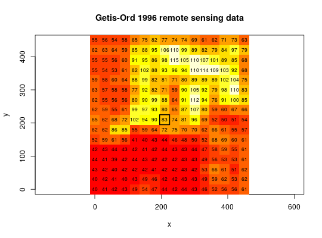

The xyz data frame has 256 rows and 3 columns. Vectors x and y are of length 16 and give the centres of the grid rows and columns, 30m apart. The data start from the bottom left, Getis and Ord start from the top left - so their 136th grid cell is our 120th.
This data frame contains the following columns:
x grid eastings
y grid northings
val remote sensing values
Getis, A. and Ord, J. K. 1996 Local spatial statistics: an overview. In P. Longley and M. Batty (eds) Spatial analysis: modelling in a GIS environment (Cambridge: Geoinformation International), 266.
data(getisord) image(x, y, t(matrix(xyz$val, nrow=16, ncol=16, byrow=TRUE)), asp=1)text(xyz$x, xyz$y, xyz$val, cex=0.7)polygon(c(195,225,225,195), c(195,195,225,225), lwd=2)title(main="Getis-Ord 1996 remote sensing data")